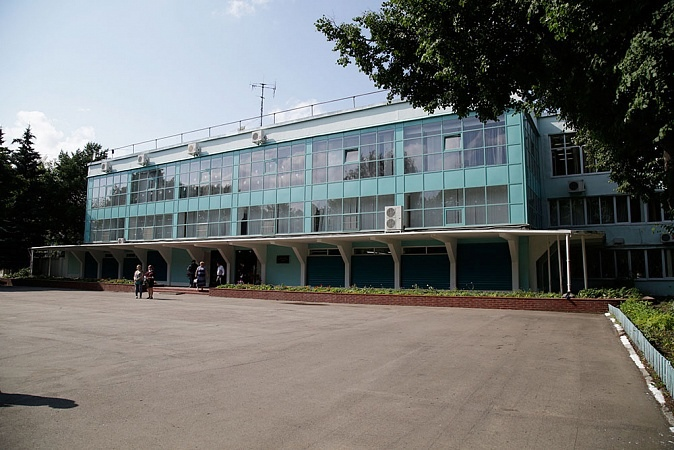

О заводе
В 60-х годах прошедшего столетия в Кимовском районе Тульской области вырабатывались и закрывались угольные шахты, дающие работу большей части населения. Для трудоустройства освобождающихся с этих предприятий работников и для разрешения перспектив развития города и района правительством страны было принято решение о строительстве завода в городе Кимовске.
Нашим отцам и нашему поколению выпала честь строить завод, создавать и развивать в городе радиопромышленность. В январе 1964 года приказом по Управлению радиотехнической и электронной промышленности Приокского Совнархоза завод отнесен к разряду действующих предприятий. Набрав мощности, Кимовский радиоэлектромеханический завод стал и является головным предприятием по поставке всей гаммы изделий АСУ ПВО Российской Федерации.
За этот период на заводе освоены и внедрены в серийное производство более 50 изделий АСУ различного уровня. Начиная с 2004 года освоено и успешно ведется серийное производство изделий нового поколения – унифицированных межвидовых автоматизированных систем управления ПВО Министерства обороны, используемых в радиотехнических войсках Военно-Воздушных Сил и Военно-Морского Флота. С 2011 года ведется серийное производство комплексных средств автоматизации в мобильном варианте с расширенными техническими характеристиками.
Кроме продукции, выпускаемой в интересах Министерства обороны, на заводе производится широкая гамма продукции гражданского назначения, начиная от кабельных наконечников и заземляющих устройств, заканчивая промышленными газовыми котлами серии ПВ, предназначенными для отопления и горячего водоснабжения зданий и сооружений.
